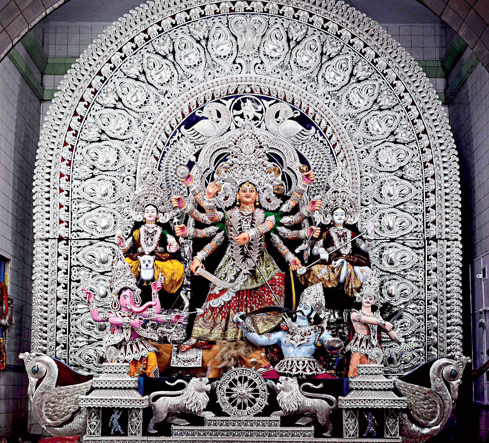

Festivals of Cuttack
Cuttack is famous for its grand festivals, especially Durga Puja, Bali Jatra, Ganesh Chaturthi, and Makar Sankranti. These festivals are celebrated with great enthusiasm, featuring artistic pandals, cultural programs, and vibrant community participation that showcase the city's unique traditions.
Festivals
